Every screen on the counter terminal, what it means, and what to do when you see it. Screenshots are from the real device (RIC v1.0), resized for reading. The red marks point at the part that matters.
When you see it: right after a customer pays.
The RIC shows a green check, the exact amount (35 sats in the example), and Payment received. Show it to the customer, then dismiss it or wait a few seconds. Big amounts get their own layout (125,000 sats below) so they never get cut off at the edge.
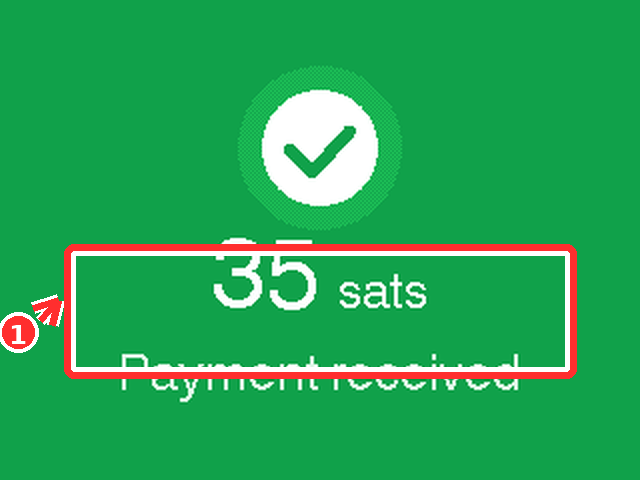
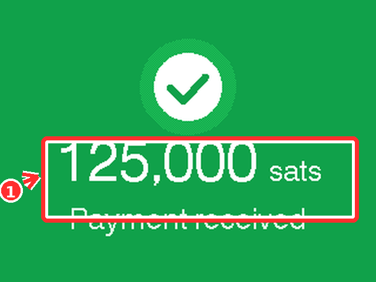
When you see it: after the shop sends sats out, for example in a cash-for-bitcoin trade.
A green check, the amount, and Payment sent. It works exactly like the received screen, only the direction of the money is opposite. Both directions settle to the same wallet, so Books always tells you which way it went.
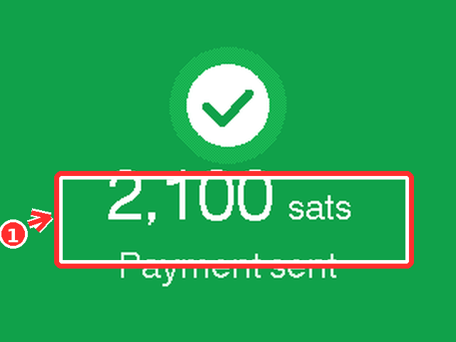
When you see it: the payment is in, and the RIC is double-checking with the server over a slow connection.
Gears and Reconnecting... mean the device lost touch with the internet for a moment. Nothing is lost: the payment amount is shown at the bottom, and the screen finishes on its own once the connection is back. If a customer is waiting, the sale has still gone through.
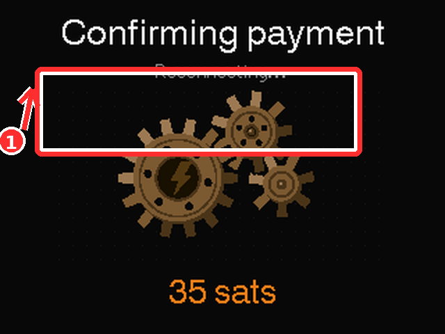
When you see it: during setup, or when the RIC comes back after the router restarts.
The RIC shows the network it is joining (your shop's WiFi) and a Cancel button. If it cannot connect, press Cancel and pick the network again from the device menu, or re-link the RIC from the app.
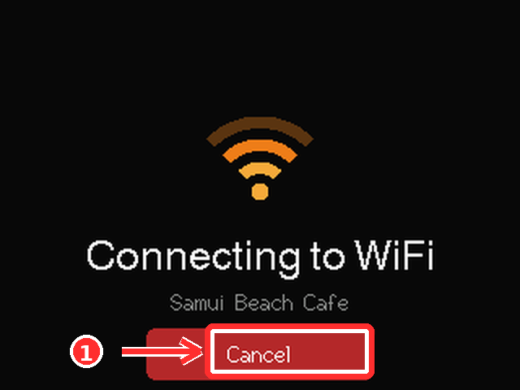
When you see it: while pressing Link device in the app.
The RIC turns into a Bluetooth beacon and shows its name (RIC-7F3A in the example). In the app, open Link device and choose this exact name. The number keeps two RICs apart when more than one is in range.
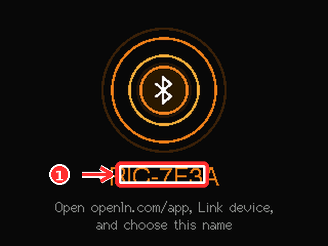
When you see it: while issuing cards at the counter (RIC Settings, Issue Card), and after wiping one.
Card issued with the openLN card graphic confirms the blank NFC card now carries its keys and is ready for payments. Card wiped means the chip was reset to factory: the physical card is blank and can be issued again.
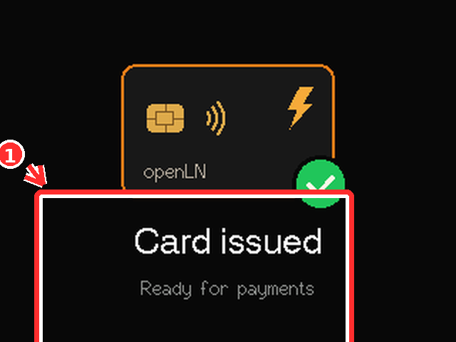
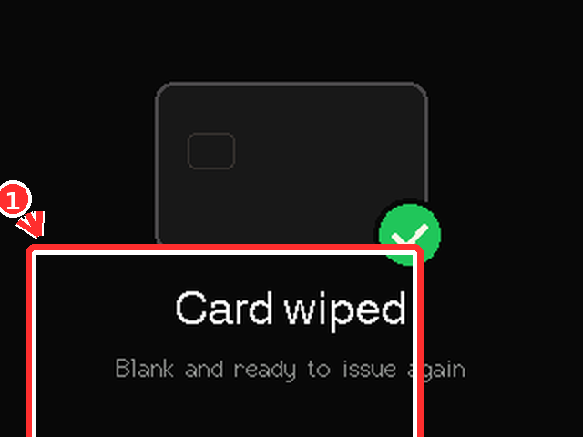
When you see it: after you press Update on the device.
A progress ring counts to 100 percent (72 percent in the picture) while the new firmware writes. Do not disconnect power while the ring is moving. When it finishes the RIC restarts on its own and reconnects.
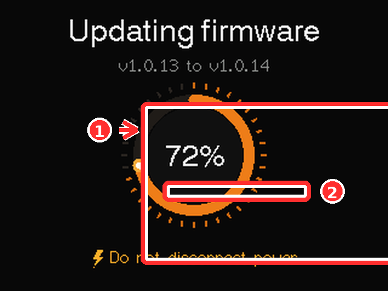
When you see it: on a fresh payment, before the summary.
Received and sent payments both get a brief burst of dots behind the amount. It is the device saying the payment went through, in the same green every time.
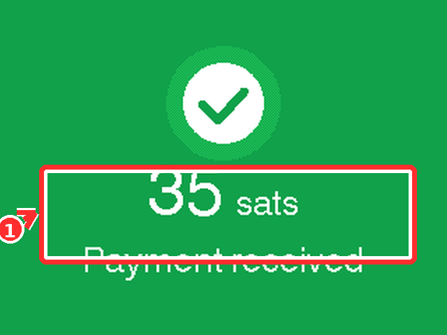
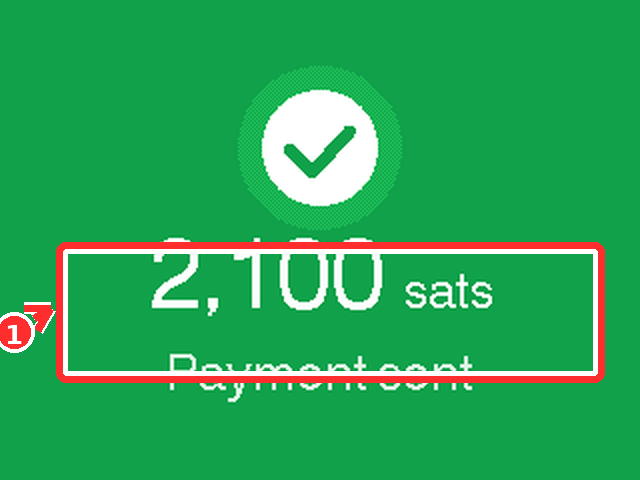